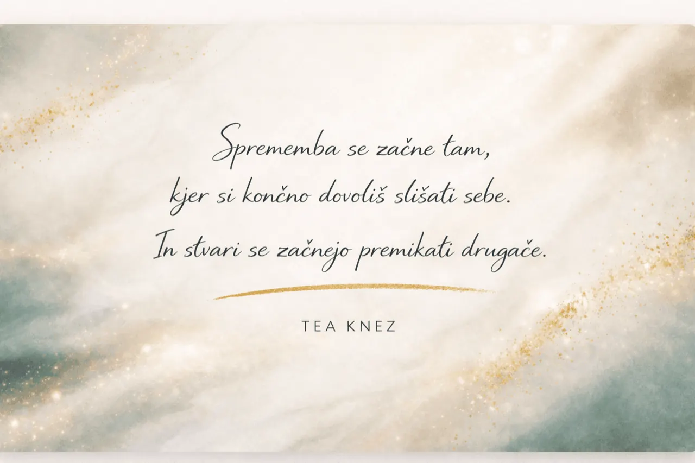

Ustavimo se
Z usmerjenimi vprašanji odprem prostor, kjer lahko slišiš lasten glas - namesto da te prehitevajo zunanji nasveti.
Coachinja, podjetnica, žena in mama.
V svoji karieri sem delovala v okoljih, kjer so odločitve pomembne, odgovornost velika in odnosi pogosto kompleksni.
Danes spremljam predvsem ženske v pomembnih življenjskih in kariernih prehodih - od vračanja s porodniške do usklajevanja materinstva, kariere in podjetništva.

Moja pot se ni začela s coachingom. Začela se je kot pravnica in mediatorka, nato pa se je razvijala naprej - analitično, odločno in v okoljih, kjer so odločitve zahtevne.
Različna delovna področja so me naučila, kako pomembni so odnosi, razumevanje in sposobnost slišati drug drugega.
Kot vodja ekip sem skozi leta razvila tudi posebno občutljivost za prelome - trenutke, ko se karierne in osebne odločitve prepletajo na nov, zahtevnejši način.
Danes svoje pravniške, vodstvene in podjetniške izkušnje vključujem v coaching, kjer podpiram ženske v pomembnih prehodih - z naravnim tempom, vključujoče in iskreno.
Z usmerjenimi vprašanji odprem prostor, kjer lahko slišiš lasten glas - namesto da te prehitevajo zunanji nasveti.
Prepoznava vzorcev, vrednot in resničnih prioritet. Vidiš celotno sliko - od zunaj in znotraj.
Zaupaš si in delaš premišljene korake. Ker so naslednji koraki tvoji - ne moji.
Coaching ni zgolj veščina - je profesija. Zato si nenehno izpopolnjujem znanje in zagotavljam, da delam v skladu s standardi ICF in EMCC.
V vsakem srečanju sem polno prisotna, polno zbrana in odprta za to, kar prinašaš v ta prostor.
Verjamem, da v sebi že nosiš vse, kar potrebuješ. Coaching te podpre, da to slišiš in narediš naprej.
Coaching je zaupen prostor, kjer si lahko taka, kot si. Brez sodbe, brez pričakovanj, ki niso tvoja.
Mogoče je čas, da si vzameš trenutek zase. Brez pričakovanj, brez pritiska. Samo prostor za razmislek o tem, kar potrebuješ ti.
Rezerviraj uvodno srečanje →